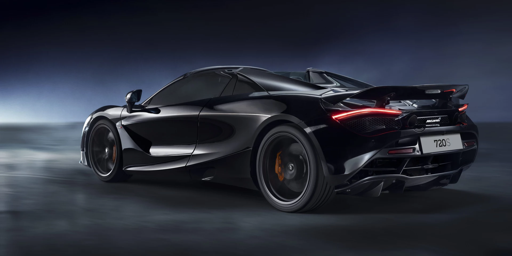
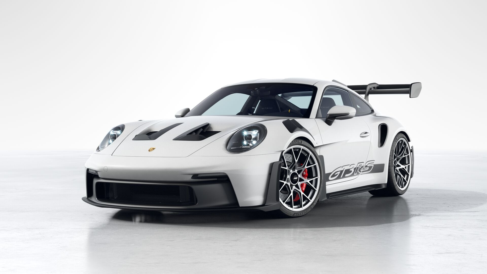
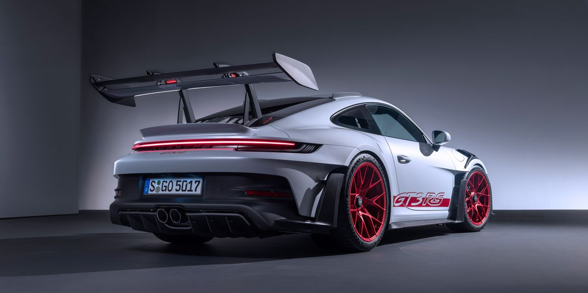
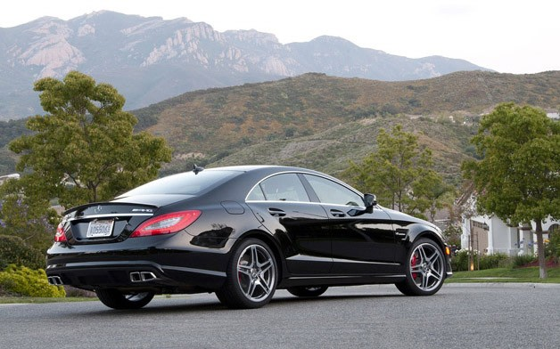
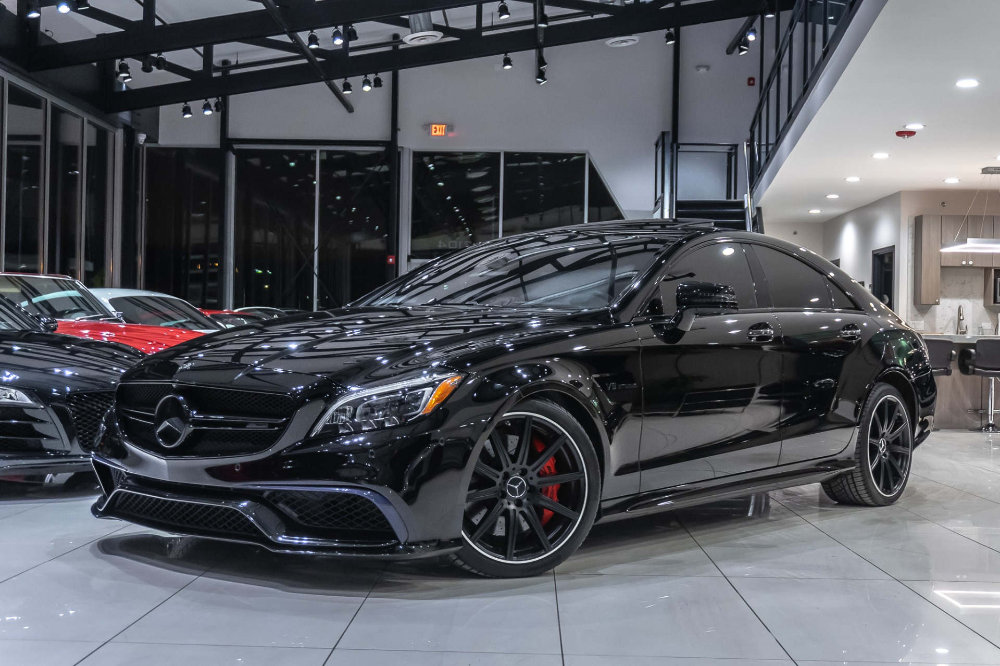

3 из самых красивых спорткаров в мире!
McLaren 720s Spider

McLaren 720S — спортивный автомобиль, созданный британским автопроизводителем McLaren Automotive. Впервые был показан на Женевском автосалоне в 2017 году. Пришел на смену McLaren 650S. При этом во время закрытой премьеры до этой, были проданы 400 автомобилей в особом исполнении. aren 720S расположен в линейке Super Series, и новее своего преемника на 91 %. Оснащен доработанным 4,0 литровым двигателем V8 с двумя турбокомпрессорами, суммарно выдает 720 л. с. и 770 Н/м. Автомобиль также оборудован семиступенчатой роботизированной коробкой переменных передач и задним приводом. Силовой агрегат является доработанной версией мотора предшественника.

Максимальная скорость авто составляет — 348 км/ч.
Разгон на 1/4 мили составляет 10,5 сек.
Ускорения:
0 — 100 км/ч. — 2,9 с.
0 — 150 км/ч. — 4,7 с.
0 — 200 км/ч. — 7,6 с.
0 — 250 км/ч. — 13,9 с.
0 — 300 км/ч. — 19,7 с.
Porsche GT3 RS

PORSCHE 911 GT3 RS (997.2) - это обновленная версия предыдущего 911 GT3 RS (997.1). Он имеет новый 3,8-литровый двигатель Flat-6 по сравнению с предыдущим 3,6-литровым двигателем Flat-6, недавно установленный титановый глушитель выхлопа и наконечник, а также литий-ионный аккумулятор. Эти улучшения позволили новой модели получить на 35 лошадиных сил больше и весить на 11 фунтов меньше.

Передние шины 265/35 R20. Задние шины 325/30 ZR21.
Объем 4.0 л Мощность 520 л. с.
Расход 12,8 л Тип топлива Бензин АИ-98.
Трансмиссия Робот Привод Задний (RR)
Кол-во мест 4 места Кол-во дверей 2 двери
Клиренс 120 мм Объем багажника 125 л
Mercedes CLS 63 AMG (C218) aka. Банан

Mercedes-Benz CLS-класс — серия люксовых среднеразмерных четырёхдверных купе и универсалов, выпускающихся германской маркой Mercedes-Benz с 2004 года. Созданные на базе E-класса модели позиционируются как более спортивные и оснащённые по сравнению с E-классом. В конце 2010 года было представлено и в начале 2011 года поступило в продажу четырёхдверное купе второго поколения, C218.

В ноябре 2010 года компания Mercedes-Benz на автосалоне в Лос-Анджелесе представила «заряженную» версию CLS второго поколения — CLS 63 AMG. Автомобиль оснащен 5,5-литровым битурбированным V8 двигателем M157 мощностью 525 л.с. и крутящим моментом 700 Н·м, агрегатированный с семиступенчатой роботизированной КПП AMG Speedshift MCT. Модели CLS 500 и спортивный CLS 63 AMG выпускаются с апреля 2011
Created by @jac.madi